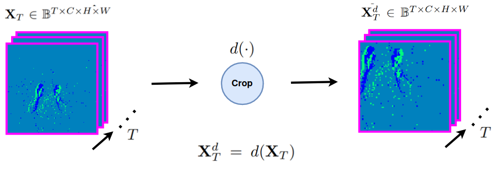
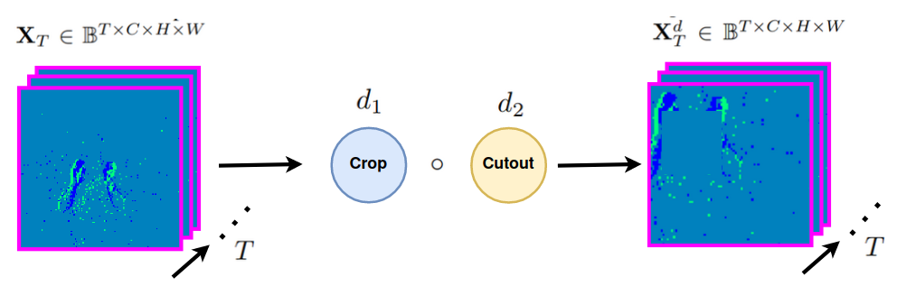
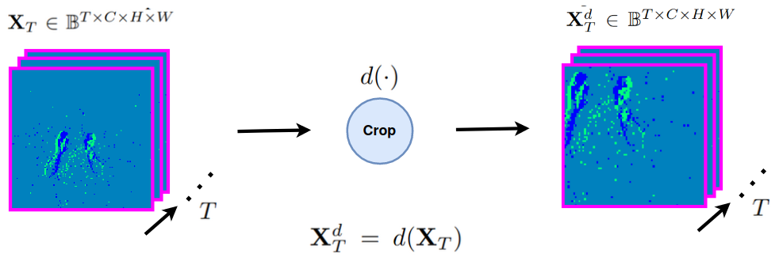
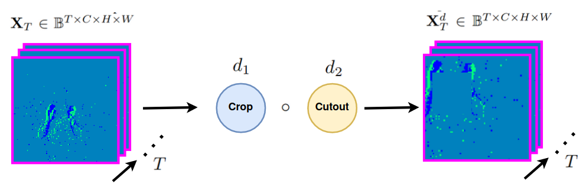
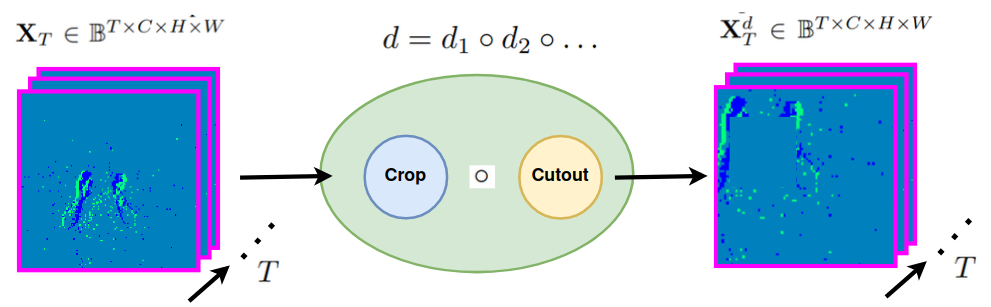
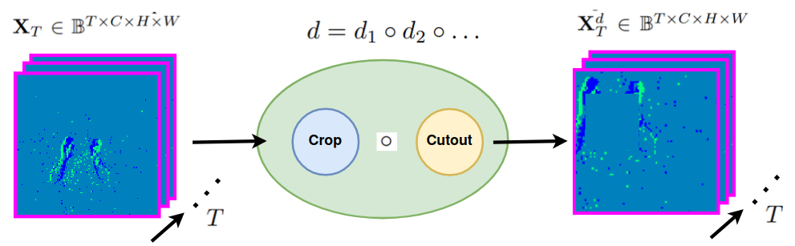
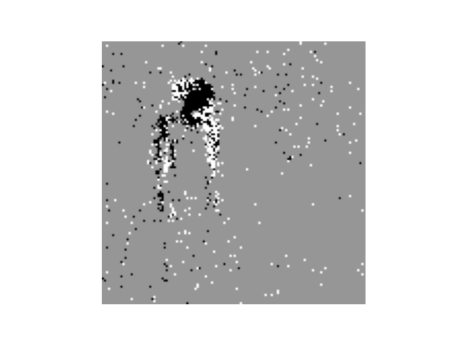
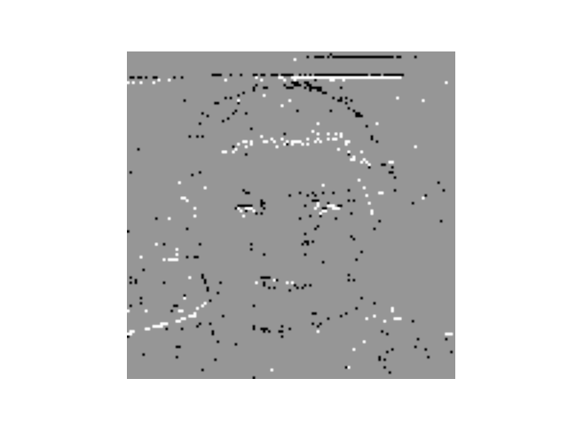
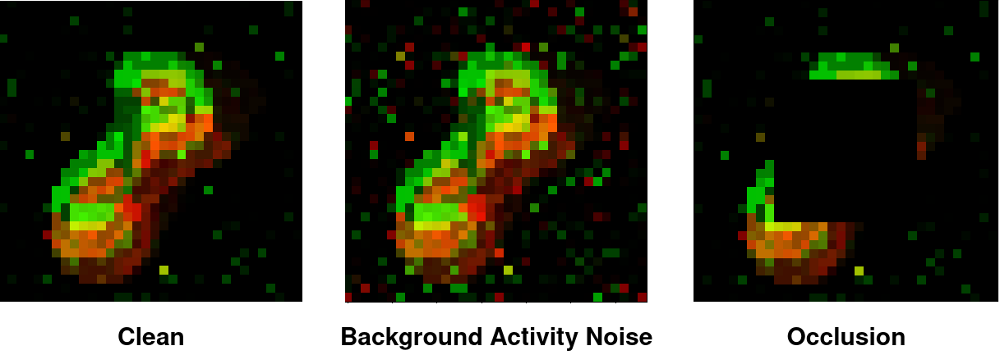
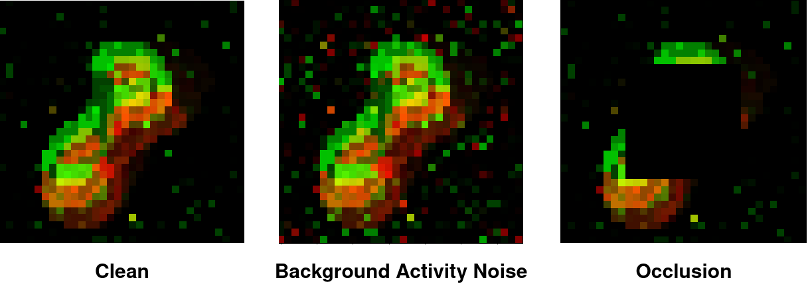

Self-supervised Learning for Event-based Vision
Laying the foundation of Self-Supervised Learning (SSL) applied to event-cameras
Sami BARCHID José MENNESSON Chaabane DJÉRABA

Introduction
Event Cameras
From video here: https://www.youtube.com/watch?v=LauQ6LWTkxM
Advantages
- Sparser representation
- üöÄ Low latency (~1 ¬µs)
- Motion blur
- üõ°Ô∏è Higher dynamic range
- üåç Energy efficiency
Event-based Vision
Conventional vision algorithms cannot be applied directly.
- Asynchronous events instead of frames
- Binary changes instead of intensity values
Event representation

Definition: method that takes asynchronous events as input, and transforms them into an alternative representation (e.g. binary event frames).
Event representation

Definition: method that takes asynchronous events as input, and transforms them into an alternative representation (e.g. binary event frames).
Event representation

Definition: method that takes asynchronous events as input, and transforms them into an alternative representation (e.g. binary event frames).
Popular Strategies
- Event Frames + conventional algorithm
- Convolutional Spiking Neural Networks
Self-Supervised Learning
- üîé : learn useful representation of the data without supervision
- Pre-training (SSL) ➡️ downstream task (fine-tuning)
- Pros
- Data efficiency
- Great progress in frame-based vision recently (Contrastive Learning, ...)
Intuition
SSL is not explored in event-based vision
- No baseline
- No benchmark
- No investigation
- ...
üéØ Foundational study of event-based SSL üéØ
Contributions
- First evaluation protocols
- First baseline methods
- Impact of event-based distortions on contrastive learning efficiency
- New data augmentation methods to supplement the existing approaches
Theory
Related Works
Proposed Method
Formulation
Spike Tensor

Formulation
Neuromorphic Data Augmentation (NDA)

 



 

NDAs can be compositions of NDAs
Method
Overview
Method
Encoder Architectures
Challenges:
- Adapt the spike tensor to fit to a specific type of conv. encoder
- Representations $\mathbf{Y}^d \in \mathbb{R}^m$ do not have any temporal dimension
- ...
Method
Projector
Method
Variants
Twins
Student - Teacher
Neuromorphic Data Augmentation

Existing
Flip Polarity
Previous works
Reverse
Previous works
Random Resized Crop

Scale $\in [0.08, 1.0]$
Previous works
Static Translation
$l_x \in [- 0.2 \times W, 0.2 \times W]$
$l_y \in [- 0.2 \times H, 0.2 \times H]$
Previous works
Static Rotation

Degrees $\in [-75°,+75°]$
Previous Works
Cutout

$N_{hole} \in [1,3]$ of scale $\in [0.3, 0.6]$ each
Previous Works
EventDrop


Drop by Area
Drop by Time
Drop random events
Proposed
Background Activity Noise (BA Noise)

Proposed
Dynamic Translation
$l_x \in [- 0.2 \times W, 0.2 \times W]$
$l_y \in [- 0.2 \times H, 0.2 \times H]$
Proposed
Dynamic Rotation

Degrees $\in [-75°,+75°]$
Evaluation Protocols
Objectives
- We want to evaluate a model on its...
- üéØ accuracy obtained using its representations
- üíæ (data-)efficiency to reduce the need of labeled data
- üîÅ transferability to other datasets
- üîÄ transferability to other tasks
Additional considerations
⚠️ Event-based datasets variability ⚠️

Still Camera + moving objects
Moving camera + moving/still objects
1. Linear Evaluation

Metric: top-1 accuracy on linear classifier
2. Semi-supervised Training
Metrics: top-1 accuracy on
- 10% of the train set
- 25% of the train set
3. Transfer to other datasets
Metrics: top-1 accuracy
- 1️⃣ : DVSGesture (SSL) ➡️ DailyAction-DVS (fine.)
- 2️⃣ : N-Caltech101 (SSL) ➡️ N-MNIST (fine.)
4. Transfer to other tasks
Object Detection
50% of Gen1 (SSL) ➡️ 50% of Gen1 (fine.)
Experiments
Datasets and metrics

- Metric used: top-1 accuracy
Implementation Details
- PyTorch 1.8 on one NVIDIA Tesla P100 GPU
- Resolution: $128 \times 128$
- Employed architectures:
- CNN: ResNet-18[Kaiming2016]
- 3DCNN: MC3-ResNet-18[Kaiming2016]
- SNN: SEW-ResNet-18[Kaiming2016]
- Trained during 500 epochs using Adam optimizer with a learning rate of $0.001$
- 8-bit
uintrepresentation used for Bina-Rep (i.e. $N=8$)
Comparison with Event Representations (1)

Comparison with Event Representations (2)


Comparison with SOTA

Robustness Analysis
Corruptions
 

Dataset used: N-Cars[Sironi2018]
Robustness Analysis
severity levels
For a specific corruption: performance are evaluated on increasing severity levels (From $1$ to $5$)
- Background Activity: adds a percentage of noisy events
- Occlusion: increases the occlusion area (percentage of original resolution)
Robustness Analysis
Metric
Relative Acurracy Drop for a given severity level $i$:
$score = \frac{acc_0-acc_i}{acc_0} \times 100$
- $acc_0$ = the accuracy score on clean data
- $acc_i$ = the accuracy score on data corrupted by severity level $i$

- In general, the same evolution is observed for all methods
- Bina-Rep is on par with SOTA event representation methods
- Bina-Rep becomes more robust with more frames ($T \gt 1$)
Conclusion
Discussion
- Bina-Rep event frames express 3 information
- The presence/absence of an event
- The number of events that occured
- The order of these events in the sequence
- Better or competitive performance against SOTA
- Competitive robustness scores against common corruptions of event cameras.
Try it yourself
Available in the Tonic Library

Thank you!
References
- [Kogler2009]: Kogler, et al. "Bio-inspired stereo vision system with silicon retina imagers." International Conference on Computer Vision Systems. Springer, Berlin, Heidelberg, 2009
- [Kaiming2016]: He, Kaiming, et al. "Deep residual learning for image recognition." Proceedings of the IEEE conference on computer vision and pattern recognition. 2016.
- [Sironi2018]: Sironi, et al. "HATS: Histograms of averaged time surfaces for robust event-based object classification." Proceedings of the IEEE Conference on Computer Vision and Pattern Recognition. 2018.
- [Maqueda2018]: Maqueda, et al. "Event-based vision meets deep learning on steering prediction for self-driving cars." Proceedings of the IEEE conference on computer vision and pattern recognition. 2018.